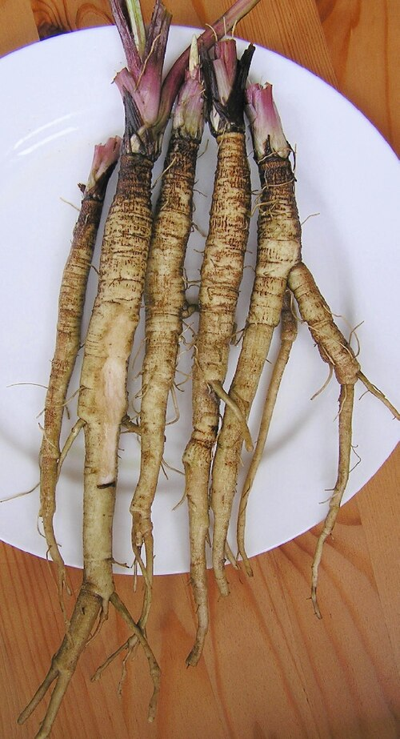
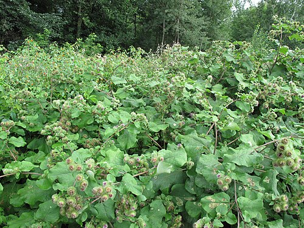

Łopian większy
Arctium lappa · rodzina astrowate (Asteraceae) · „rzep"



Występowanie
Cała Polska, ruderalne
Wysokość
100–200 cm
Kwitnienie
VII – IX
Zbiór korzenia
IX – X (1. rok) lub IV (2. rok)
Zbiór liści
VI – VIII
Cykl życiowy
Roślina 2-letnia
Opis i występowanie
Roślina dwuletnia: w pierwszym roku tworzy rozetę dużych liści (do 50 cm długości!), wytwarza gruby korzeń. W drugim roku wyrasta wysoka łodyga z kwiatami i owocami — znanymi rzepami, które czepiają się ubrań i sierści zwierząt.
Liście jajowate, od spodu szarobiało owłosione, od góry zielone. Kwiaty fioletowe (jak chaber), zebrane w kuliste koszyczki otoczone haczykowatymi łuskami okrywy — to one „chwytają". Korzeń palowy, mięsisty, sięga 60-100 cm w głąb.
Rośnie na siedliskach ruderalnych — przy ogrodzeniach, na nasypach, brzegach pól, ruinach, śmietniskach. Lubi gleby żyzne, azotowe.
Skład
| Składnik | Działanie |
|---|---|
| Inulina (do 45% korzenia) | Prebiotyk, regulacja cukru |
| Olejki eteryczne | Antybakteryjne, przeciwgrzybicze |
| Lignany (arktygenina, arktyna) | Antynowotworowe, antyoksydacyjne |
| Garbniki, śluzy | Powlekające, ściągające |
| Kwasy organiczne (kawowy, chlorogenowy) | Hepatoprotekcyjne |
| Witaminy z grupy B, C, E | Antyoksydanty |
| Minerały (żelazo, magnez, mangan, krzem) | — |
Na co pomaga
- Skóra problematyczna — flagowe zastosowanie. Trądzik, czyraki, łojotok, łuszczyca, egzema. „Krew oczyszczająca" roślina.
- Wypadanie włosów, łysienie, łojotok skóry głowy — klasyczny oliwa łopianowa.
- Łupież, swędzenie skóry głowy — wmasowywanie naparu.
- Trawienie, niedokwaśność — pobudza wydzielanie soków żołądkowych.
- Wątroba, woreczek — żółciopędne, hepatoprotekcyjne.
- Cukrzyca typu 2 — inulina łagodnie obniża glikemię.
- Reumatyzm, dna — wspomaga wydalanie kwasu moczowego.
- Zaparcia — inulina jako prebiotyk reguluje pracę jelit.
- Drogi moczowe — moczopędne.
Zbiór i suszenie
- Korzeń: jesień pierwszego roku (gdy roślina ma tylko liście, jeszcze nie kwitnie) lub wczesna wiosna drugiego. Wykop w całości (długi — dobrze przygotuj łopatę). Wymyj, pokrój na kawałki 5-10 cm, susz w 50°C.
- Liście: czerwiec-sierpień, młode, bez plam.
- Nasiona: jesień drugiego roku, z dojrzałych „rzepów".
- Przechowywanie: w słoikach, do 12 mies.
Przepisy
🍶 Oliwa/olej łopianowy — KLASYK na włosy
- 100g suszonego, pokrojonego korzenia łopianu zalej 500 ml oleju (najlepiej rycynowy + słonecznikowy 1:1).
- Postaw w słoiku na słonecznym parapecie na 2-3 tygodnie.
- Przecedź, przelej do butelki z ciemnego szkła.
- 2-3× tygodniowo wmasuj w skórę głowy, owiń ręcznikiem na 1-2 h, umyj.
- Kuracja 2 miesiące. Włosy mniej wypadają, są mocniejsze, błyszczące.
💡 Wersja na ciepło (przyspieszona): podgrzewaj olej z korzeniem na małym ogniu przez 2 h (max 70°C). Gotowe natychmiast.
🍵 Odwar z korzenia (do picia)
- Łyżkę suchego, drobno pokrojonego korzenia zalej szklanką zimnej wody.
- Zagotuj, gotuj 10-15 min pod przykryciem.
- Odstaw 10 min, przecedź.
- Pij 2× dziennie przed posiłkiem przez 3-4 tygodnie. Na trądzik, oczyszczenie organizmu, wątrobę.
🥬 Korzeń łopianu jako warzywo (japońskie „gobō")
- Świeży korzeń obierz (lub zeszkrobaj), pokrój w słupki 5 cm.
- Mocz w wodzie z odrobiną octu 10 min (zapobiega ciemnieniu).
- Smaż na sezamowym oleju z marchewką, dopraw sosem sojowym, sake, mirin, cukrem.
- To kinpira gobō — popularne danie w Japonii, polecane na zdrowie.
🌿 Płukanka na łupież i łojotok
- Wymieszaj 3 łyżki pokruszonego korzenia + 2 łyżki suchych liści.
- Zalej 1 l wody, gotuj 20 min pod przykryciem.
- Przecedź, ostudź.
- Po umyciu szamponem wmasuj w skórę głowy, lekko zwilż włosy. Nie spłukuj.
- Stosuj 2-3× tygodniowo. Często łączy się ze skrzypem i pokrzywą.
✓ Zalety
- Najlepsze ziołowe wsparcie skóry trądzikowej i łysienia
- Oliwa łopianowa — klasyk od pokoleń, sprawdzona
- Korzeń jadalny — można gotować jak warzywo
- Wszechstronne działanie: skóra, włosy, trawienie, wątroba, jelita
- Inulina jako prebiotyk — wsparcie mikroflory
- Rośnie dziko, w dużych ilościach
✗ Wady i przeciwwskazania
- Korzeń trudno wykopać — sięga 60-100 cm w głąb
- Alergia na rośliny astrowate
- Ciąża i karmienie — ostrożnie
- Cukrzyca — pod kontrolą lekarza (interakcja z lekami)
- Może powodować pocenie się i diurezę
- „Rzepy" w drugim roku — drobny chwast w ogrodzie i na sierści psa
Ciekawostki
- Suwak (rzep) Velcro — wymyślony w 1948 przez szwajcarskiego inżyniera Georgesa de Mestrala, który po spacerze z psem przyglądał się rzepom łopianu pod mikroskopem.
- Łopian w Japonii (jako gobō) i Korei to popularne warzywo — uprawiane jak marchewka.
- Z włókna łopianu w XVIII w. wyrabiano sznurki i grubsze tkaniny.
- Łacińskie lappa = „chwytać" — od haczyków na koszyczku.
- Ludowo łopian zwany jest „rzepem", „dziadowymi wszami", „korzeniem dla łysych".